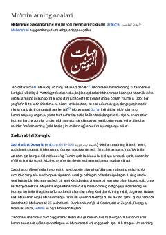

MOMuhammad payg'ambarning ayollari hayoti va islom tarixidagi o'rni haqida ma'lumot.
Ushbu kitob Muhammad payg'ambarning ayollari, ya'ni mo'minlarning onalari hayoti va ularning islom tarixidagi o'rni haqida ma'lumot beradi. Unda Xadicha binti Xuvaylid, Sauda binti Zama, Oisha binti Abu Bakr va Hafsa binti Umar kabi shaxslarning hayot yo'li va faoliyati yoritilgan.